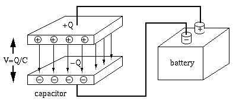
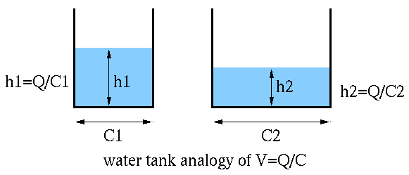
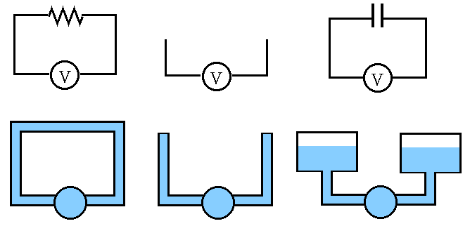
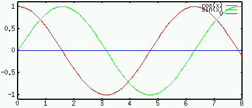
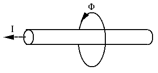
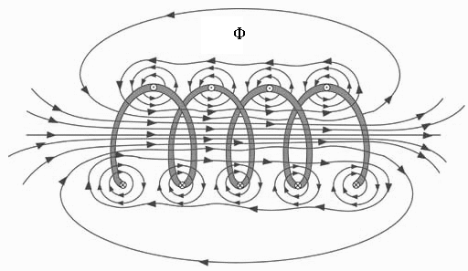
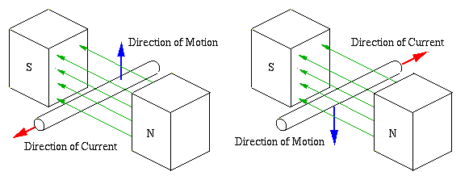
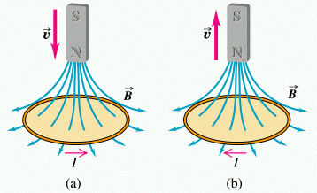
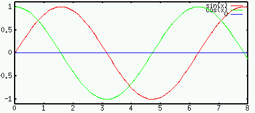
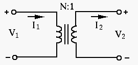

Next: Energy Dissipation/Storage in R, Up: Chapter 1: Basic Quantities Previous: Basic Quantities
In the following, we adopt the convention that a constant or
direct current (DC) or voltage is represented by an upper-case letter
 or
or  , while a time-varying or alternating current (AC) current
or voltage is represented by a lower-case letter
, while a time-varying or alternating current (AC) current
or voltage is represented by a lower-case letter  or , sometimes
simply
or , sometimes
simply  and
and  .
.
Each of the three basic components resistor R, capacitor C, and inductor L can be described in terms of the relationship between the voltage across and the current through the component:
The voltage across and the current through a resistor are related by Ohm's law:
| (19) |
 is the resistance of the conductor measured by Ohm
is the resistance of the conductor measured by Ohm
 (George Ohm (1789-1854)).
(George Ohm (1789-1854)).
The reciprocal of the resistance is the conductance:
| (20) |
A capacitor is composed of a pair of conductor plates separated by some insulation material. The same amount of charge (of opposite polarity) is stored on each of the two plates.
The voltage between the two plates is proportional to the charge ,
but inversely proportional to the capacitance  of the capacitor:
of the capacitor:
| (21) |


This relationship can be understood by considering the water tank
analogy of the capacitor. The capacity (analogous to capacitance
of a capacitor) of the tank on the left is smaller than that of  on the right, for the same amount of water (analogous to charge),
the water surface
on the right, for the same amount of water (analogous to charge),
the water surface  is higher than that of
is higher than that of  , indicating the
surface height (analogous to voltage ) is proportional to
water volume but inversely proportional to the tank capacity ,
i.e., .
, indicating the
surface height (analogous to voltage ) is proportional to
water volume but inversely proportional to the tank capacity ,
i.e., .

Why can an AC current “flow through” a capacitor composed of two insulated plates? Again consider the water tank analogy of the capacitor. If the pipeline is disconnected (an open circuit), no water flow (current) can go through. If two tanks are connected to the ends of the pipeline (a capacitor), and the pump drives the water in one direction (analogous to a DC voltage source), one of the tanks will fill up while the other one is empty (due to some initial current), there is still no continuous current. However, if the pump drives the water in alternative directions (analogous to AC voltage source), the water can flow through the pipeline, analogous to an AC current going through a capacitor (not through the insulation between its two plates).
The current through a capacitor can be found as:
| (22) |
is determined by the parameters of the capacitor:
| (23) |
 is the overlapping area of the plates and
is the overlapping area of the plates and  is the distance
between them, while
is the distance
between them, while  is the
permittivity (dielectric constant)
(the amount of charge needed
to generate one unit of electric flux) of the medium between the plates,
is the
vacuum permittivity, and
is the relative permitivity.
In an electrolytic capacitor, the gap between
the two plates is filled with dielectric medium of higher permittivity
so that the capacitance is increased.
is the
permittivity (dielectric constant)
(the amount of charge needed
to generate one unit of electric flux) of the medium between the plates,
is the
vacuum permittivity, and
is the relative permitivity.
In an electrolytic capacitor, the gap between
the two plates is filled with dielectric medium of higher permittivity
so that the capacitance is increased.
is measured in Farads (F)
(Michael Faraday (1791-1867)):
| (24) |
Specially, when the voltage is sinusoidal , the current is
| (25) |

 of the voltage. In particular, for DC (
of the voltage. In particular, for DC ( ).
The current
is 0 (open circuit), and
when the frequency is very high (
).
The current
is 0 (open circuit), and
when the frequency is very high (
 ), the
current
(short circuit).
), the
current
(short circuit).
Magnetic field (flux) is generated in the space around a current flowing through a piece of conductor:

The magnetic field around a coil is the superposition of the magnetic flux generated by each section of the coil:

Electric current is induced in a conductor when there is changing magnetic flux in the surrounding space.


A time-varying electric current in a coil will cause a time-varying magnetic field in the surrounding space, which in turn will induce electric voltage and then current in the same coil (self-induction) or a different coil in the neighborhood (mutual-induction).
The self-induced voltage, the electromotive force (emf), across
the inductor coil due to a current is proportional to the rate
of change of the total magnetic flux
( being the
flux in one of the
being the
flux in one of the  turns of the coil) caused by the current :
turns of the coil) caused by the current :
| (26) |
 is determined by the parameters of the inductor:
is determined by the parameters of the inductor:
| (27) |
and  are respectively the cross section area and
length of the coil, is the number of turns, and
are respectively the cross section area and
length of the coil, is the number of turns, and  is the
magnetic permeability
(the ability of a material to support the
formation of a magnetic field within itself) of the medium inside
the coil. When a medium of high permeability, such as an iron core,
is inserted into the coil, its inductance is increased.
is the
magnetic permeability
(the ability of a material to support the
formation of a magnetic field within itself) of the medium inside
the coil. When a medium of high permeability, such as an iron core,
is inserted into the coil, its inductance is increased.
The unit of is henrys (H)
(Joseph Henry (1797-1878)):
| (28) |
include
and
 .
.
The polarity of the self-induced voltage in a coil is such
that it tends to produce a current which induces a magnetic flux to
oppose the change of the magnetic field that induced the voltage,
thereby opposing any change in current that is causing the
magnetic flux.
When current increases, the induced voltage tends to
resist it, when current decreases, the induced voltage
tends to sustain it.
Specially, when the current is sinusoidal , the voltage is
| (29) |

of the current. In particular, for DC (),
the voltage is 0 (short circuit), and when the frequency is very
high (
), the voltage
(open circuit) for a finite .
From the above discussion, we see that for sinusoidal voltage and current, the voltage across a capacitor is lagging behind the current by 90 degrees, as it takes time to build up the charge and thereby the voltage ; while the current through an inductor is lagging behind the voltage across it, as it takes time to build up the magnective flux and thereby the current . This fact can be easily memorized by “ELI the ICE man” (with E for voltage and I for current).
Note the following dimensionalities:
| (30) |
| (31) |
Comparing the relationships between the current through and voltage
across the three components below, we see that capacitance is a
conductive variable similar to , while inductance is a resistive
variable similar to .
| (32) |

Two coils around a common iron core form a transformer. Assume the
primary coil has turns of wire and the secondary coil has
turns. The total magnetic flux
is proportional to the
number of turns , where is the flux with one turn of wire
in both primary and secondary coils. We assume the transformer is
ideal or lossless, in the sense that
goes through the
iron core of both primary and secondary coils;
 received by the primary
coil is is completely delivered to the secondary coil.
received by the primary
coil is is completely delivered to the secondary coil.
Faraday's Law: The voltage across a coil is proportional to the rate of change of the total magnetic flux:
| (33) |
| (34) |
i.e., |
(35) |
| (36) |
 ,
then according Ohm's law, we have
, and
,
then according Ohm's law, we have
, and
| (37) |